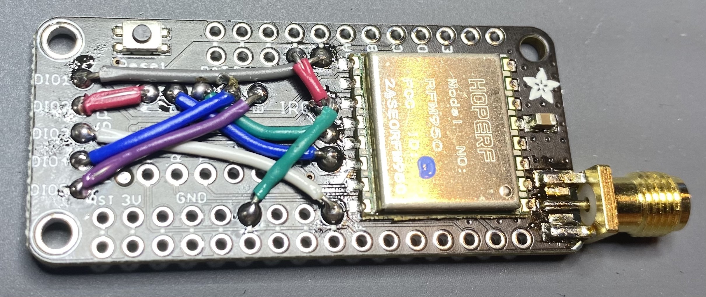

It is also possible to run the RelayableNFT Example on an embedded device that has a LoRa transceiver. Such a device can be rapidly prototyped using several off-the-shelf, Feather boards and a common USB-UART adapter. Schematic and Gerber files for a printed circuit board that simplifies assembly can be found in the repository. We supply a firmware that exposes commands over an AT-style serial interface to compose, sign, and transmit RelayableNFT messages over LoRa. This firmware is meant to serve as a reference and be modified to suit specific use cases. This firmware can be found in the end-node/ directory in the main repository.
If you intend to assemble a transmitter or use this firmware, you MUST read and study this documentation thoroughly. The default settings supplied in the firmware may not be in compliance with the regulations in your region. You are advised to make yourself aware of all regulations pertaining to use of the RF spectrum in your region. You assume responsibility for compliance with regulations pertaining to use of the RF spectrum in your region. Use this software at your own risk. In no event will Foamspace be liable to any user of this software under any theory for any damages arising from any use of this software.
A development device can be assembled using the following components. Familiarity with soldering is required when building your own. If you have received a prototyping kit at ETHDenver 2022, feel free to skip this section. Alternatively, you may assemble a bridge PCB from the schematics and design files in the repository and populate it with buttons and appropriate headers.
To maintain compatibility with the many different Feather boards on the market, the Radio FeatherWing requires you to make some of the connections manually. The firmware we shipped assumes the following connections made:
The IRQ pin **needs TWO** connections made:
IRQ to 16-pin Header Parallel, Pin 6 — This is third pin to the left of where we connected DIO3, or the second pin to the right of GND on the Feather connector.

Connect the TX, RX, and GND to the corresponding pins on your USB-UART cable. You may need to cross-over the TX and RX lines, depending on your cable. It is recommended to leave the VCC pin unconnected, as many USB ports will be unable to power both the USB-UART cable and the radio assembly. Instead, it is recommend to power the Feather using the onboard USB connector.
Once the board is assembled, it will need to be flashed with firmware that drives the LoRa transceiver and signs messages. A compiled version of the firmware can be found as rnft-f405-v1.0.0.dfu in the root of the repository. If you have received a prototyping kit at ETHDenver 2022, it has already been flashed with this firmware.
If compiling your own firmware: arm-none-eabi-gcc suite, 10.3 (2021.07)
Mac users may take advantage of mbed’s Homebrew formulae
1 | brew tap ArmMbed/homebrew-formulae |
Advanced users with an ST-Link/V2 debug probe may alternatively solder SWD lines to the test points on the bottom of the F405 Feather, and build/debug the project with STM32CubeIDE. They can import the repository as a Non-Managed Makefile Project, and add a build environment variable named TARGET_PLATFORM with the value FEATHER_F405.
dfu-util 0.10Compiling the firmware is straightforward. With the toolchain installed, run TARGET_PLATFORM=FEATHER_F405 make. A DFU image will be created as BUILD/ltsp.dfu
VID: 0x0483, PID: 0xdf11TARGET_PLATFORM=FEATHER_F405 make dfu which will compile the firmware and flash it.dfu-util --device 0x0483:0xdf11 --alt 0 --dfuse-address 0x8000000 -D rnft-f405-v1.0.0.dfu -R0x8000000 (which is where the STM32F405 onboard program flash memory starts and where it boots from)-R flag, dfu-util might fail to reset the device and and complain — this is actually expected behavior for some STM32 chips. As long as the rest of the flashing procedure completed successfully, it is nothing to worry about./dev after connecting the USB-Serial adapter. Depending on the cable manufacturer and operating system, these devices may have different names:/dev/ttyUSBx or /dev/ttyACMx/dev/tty.usbmodemXXXXXX or /dev/tty.usbserialXXXXXXCRLF. The serial interface uses an 115200/8N1 configuration. (115200 baud rate, 8 data bits, no parity bit, 1 stop bit)stty prior to launching your serial program to do this for you. There is a slight difference in the capitalization of the -F flag between the two OSes.sudo stty -F /dev/the_tty_device onlcrsudo stty -f /dev/the_tty_device onlcrscreen is a good first choicesudo screen /dev/the_tty_device 115200Ctrl+A, followed by k, then y. Simply closing your terminal may leave screen attached to the device, causing issues when reconnecting to the serial interface again. If you forget to do this and find weird issues like your input not going to the device, disconnect and then try sudo screen -x to try and reattach to the previous session.RESET=v1.0.0,OKERROR in the response, you have a hardware issue somewhere. Ensure that all connections and solder joints have been correctly performed.AT+VERSION as a sanity check and press enter.Ctrl+M Ctrl+J to “manually” send a CRLF and have your command go throughAT+GENKEY and press enterCtrl+M Ctrl+J to manually send CRLFGENKEY=<32 byte hex string>,OK. This a private key that was generated to sign messages with.AT+PRVKEY.AT+PRVKEY again. You will notice that the private key returned now is 000000.... Private keys are not persisted across resets, you can tell the device to use the previously generated key by sending AT+PRVKEY=<the 32 byte hex string previously returned>.CHANGE THE RADIO SETTINGS. THE DEFAULT SETTING ON STARTUP IS SET TO RECEIVE MESSAGES FROM A GATEWAY IN THE US, AND YOU SHOULD REALLY NOT TRANSMIT MESSAGES ON THIS CHANNEL. MOREOVER, MOST GATEWAYS WILL NOT RECEIVE YOUR MESSAGES IF YOU TRANSMIT WITH THESE SETTINGS.
If you are in the US, you can try AT+RADIOCFG=904700000,14,0,1,2,8,1. This will set the radio to transmit and receive on 904.7MHz, with 14dBm transmit power, at SF7BW125, with 4/6 overcoding rate and a 12 chirp preamble, with CRC enabled. See the AT+RADIOCFG= command reference for full details.
ENSURE THAT THE SETTINGS YOU USE ARE IN COMPLIANCE WITH YOUR REGIONAL REGULATIONS BEFORE PROCEEDING.
RADIOCFG=OK event.AT+FLMINT+TX=0,F00D,12340, a 61453*10^-18 (0xF00D) FungibleToken transaction fee (note, this is the value as represented in the token contract in the minimal denomination), and token data 0x1234FLMINTMSG=<long hex string>,OK, and TXDATA=<internal transmit timestamp>,OKERROR,<code> anywhere at this point, check the error code reference below and attempt the troubleshooting steps outlined in this document.AT+FLXFER+TX=1,600D,1234,00000000000000000000000000000000000000001, a 24589*10^-18 (0x600D) FungibleToken fee, transmitting token ID 1234 (0x4D2 in hex) to the null (0x00...) address.FLXFERMSG=<long hex string>,OK and TXDATA=<internal transmit timestamp>,OKERROR,<code> anywhere at this point, check the error code reference below and attempt the troubleshooting steps outlined in this document.The firmware shipped with the Feather board provides a a serial interface to perform FOAM Lite operations and send LoRa messages with the onboard LoRa modem using a text-based command interface similar to the Hayes command set. This may be familiar to anyone who has played with a dial-up in the modem in the 90s. For the rest of us, here’s a crash course.
The AT (or Hayes) command is designed to enable configuration of a modem device using a newline-delimited, plain-text interface. Commands, which are typically prefixed with AT+ (standing for ATtention) are sent to the modem to inspect or modify its operating state, or transmit data. The modem sends events either in response to a command, or when external triggers such as receiving data occurs. Unlike conventional modems, we do not have a dedicated “data mode” in our serial interface. All communication between the computer and modem occurs using plain-text commands and events.
Commands and events are separated by DOS style newlines (CRLF — a carriage return character (ASCII 0x13) followed by a line feed (ASCII 0x10) character). This is done to simplify automated interaction with the modem, making it unambiguous as to what is considered a separate command or event.
Commands come in two flavors, parameterized and unparameterized. Parameterized commands take the form of AT+<command_name>=param1[,optional_param_2[,optional_param_3...]] — taking an optional list of parameters separated by commas. These are used to change the operating state of the device, or make it transmit data. Unparameterized commands take the form of AT+<command_name>, but do not have an = nor take any parameters. These are used to inspect the running configuration of the device. Some parameterized commands have an unparameterized counterpart — these emit an event with the same name as the command which can be prefixed AT+ and sent back to the device to return it to the state in which it was when the unparameterized command was sent.
Events, on the other hand, always take the form of <event_name>=[param_1,[optional_param_2,...]<status code>. All events will always have at least a status code associated with them. For example, when you first connected to the board and pressed the RST button, you saw a RESET=v1.0.0,OK event — signifying that the device is running firmware v1.0.0 and started up successfully. If you had a hardware failure, you may have seen RESET=v1.0.0,ERROR,0 instead. A full list of status codes can be found later in this documentation. Typically, a command will be followed by an event with the same name. However, certain commands, particularly AT+FLMINT+TX= and AT+FLXFER+TX= may emit two events with unrelated names.
By default, the firmware echoes back whatever is typed into it, this is to make human interaction intuitive. This can be disabled with the AT+ECHOBACK= command.
Typically, there are four variants of parameters that the various commands take. These are:
0, 1, 42, 999, 12309-1, -FFF, -0xFF, hello, 123F, 0xABCD0x prefix.00000000, 12345678, ABCD1234hello, 0, 00, 0x00000000, 0x1234567, 0xABCD1234, hello0x prefix.00, 10, F000, 600DCAFE0, A, F00, hello, 0x00, 0x10, 0xF000, 0x600DCAFE0 if necessary. They are variable length to avoid having to supply an unwieldy amount of 00s when representing large numbers. They do not have a 0x prefix.00, 10, F000, 600DCAFE0, A, F00, hello, 0x00, 0x10, 0xF000, 0x600DCAFE, -FF, -0x12, -0xAA full list of status codes can be found below
OK — the requested operation completed successfullyERROR,0 — A hardware failure has occurred in the deviceERROR,1 — Incomplete, invalid, or malformed parameters were given with a commandERROR,2 — An error occurred while transmitting data over LoRaERROR,3 — An operation timed out.ERROR,100 — The blockchain subsystem has never been initialized in the firmwareERROR,101 — The blockchain subsystem is using an invalid private key. This typically occurs when trying to sign messages without setting a private key after resetting the device.ERROR,102 — An invalid signature was supplied to AT+ECRECOVER or AT+ETHRECOVERERROR,103 — A public key could not be recovered from the data to supplied to AT+ECRECOVER or AT+ETHRECOVER, likely due to invalid dataERROR,240 — The requested operation is unsupported on this device.While most events are sent as a response to a command, there are a few events which do not correspond to any command. All events have at least a status code associated with them, which is elided from their description and can be referenced above. All events are outlined here for reference.
RESET: Sent when the device first boots up, in a response to an AT+RESET command.RESET=<version string>,<status code><version string> is the semantic version of the firmware on the device in the format v<MAJOR>.<minor>.<patch>VERSION: Sent in response to an AT+VERSION commandVERSION=<version string>,<unique device id>,<supported commands,...>,<status code><version string> is the semantic version of the firmware on the device in the format v<MAJOR>.<minor>.<patch><unique device id> the unique serial number of the STM32F405 chip as burned into the hardware.<supported commands> is a comma-separated list of commands supported by the firmware, without the AT prefix.ECHOBACK: Sent in response to an AT+ECHOBACK or AT+ECHOBACK= commandECHOBACK=<current value>,OK in response to an unparameterized AT+ECHOBACKECHOBACK=<status code>, in response to a parameterized AT+ECHOBACK=OK is sent if the echoback setting is updated successfullyERROR,1 is sent if an invalid parameter was specifiedRADIOCFG: Sent in response to an AT+RADIOCFG or AT+RADIOCFG= commandRADIOCFG=<current settings,OK in response to an unparameterized AT+RADIOCFG. See the description for the AT+RADIOCFG= command for more details on these settings.RADIOCFG=<status code>, in response to a parameterized AT+RADIOCFG=OK is sent if the radio configuration settings are updated successfullyERROR,1 is sent if an invalid parameter was specifiedTX: Sent when a radio transmission completed, in response to AT+TX=TX=<internal timestamp>,OK if the transmission completed successfullyTX=<status code> if an error occurred while transmitting.TXDATA: Sent when a radio transmission is complete following an AT+FLMINT+TX= or AT+FLXFER+TX= commandTXDATA=<internal timestamp>,OKTXDATA=<status code> if an error occurred while transmittingRNG: Sent in response to an AT+RNG commandRNG=<random uint32 in base 10>,OKKECCAK256: Sent in response to an AT+KECCAK256= commandKECCAK256=<32 byte hex string>,OK where the hex string is the Keccak256 hash of the data supplied to the AT+KECCAK256= commandKECCAK256=ERROR,1 if an invalid input was given to the commandGENKEY: Sent in response to an AT+GENKEY commandGENKEY=<32 byte hex string>,OK containing the generated private keyPRVKEY: Sent in response to an AT+PRVKEY or AT+PRVKEY= commandPRVKEY=<32 byte hex string>,OK in response to an unparameterized AT+PRVKEY command containing the private key currently used for signing messagesPRVKEY=OK in response to a parameterized AT+PRVKEY= containing a valid private keyPRVKEY=<status code> in response to a parameterized AT+PRVKEY= containing an invalid private keyPUBKEY: Sent in response to an AT+PUBKEY commandPUBKEY=<64 byte hex string>,OK where the hex string is the uncompressed public key corresponding to the active private key, without the 04 prefixETHADDR: Sent in response to an AT+ETHADDR commandETHADDR=<20 byte hex string>,OK where the hex string is the Ethereum address corresponding to the active private keyECRECOVER: Sent in response to the AT+ECRECOVER= commandECRECOVER=<64 byte hex string>,OK if a public key could be successfully recovered from the supplied inputECRECOVER=<status code> if a public key could NOT be successfully recovered from the supplied inputETHRECOVER: Sent in response to the AT+ETHRECOVER= commandETHRECOVER=<20 byte hex string>,OK if a public key could be successfully recovered from the supplied input, then the hex string will contain the corresponding Ethereum addressETHRECOVER=<status code> if a public key could NOT be successfully recovered from the supplied input, and hence an Ethereum address could not be computedFLMINTHASH: Sent in response to the AT+FLMINTHASH= commandFLMINTHASH=<32 byte hex string>,OK if a signing hash could be computed from the supplied inputFLMINTHASH=<status code> if a signing hash could not be computed from the inputFLXFERHASH: Sent in response to the AT+FLXFERHASH= commandFLXFERHASH=<32 byte hex string>,OK if a signing hash could be computed from the supplied inputFLXFERHASH=<status code> if a signing hash could not be computed from the inputFLMINTMSG: Sent in response to the AT+FLMINTMSG= and AT+FLMINT+TX= commandsFLMINTMSG=<variable length hex string>,OK if a valid minting message was constructed from the input and successfully signed. When received as a response to the AT+FLXFER+TX= command, a TXDATA event should be expected to occur shortly thereafter.FLMINTHASH=<status code> if a mint message could not be constructed from the input, or the private key currently in use is invalidFLXFERMSG: Sent in response to the AT+FLXFERMSG= and AT+FLXFER+TX= commandsFLXFERMSG=<variable length hex string>,OK if a signing hash could be computed from the supplied input. When received as a response to the AT+FLXFER+TX= command, a TXDATA event should be expected to occur shortly thereafter.FLXFERMSG=<status code> if a transfer message could not be constructed from the input, or the private key currently in use is invalidA full list of commands supported by the firmware is described below. Note that some commands have both a parameterized and unparameterized variant. These are listed separately.
Basic commands corresponding to core functionality of the serial interface:
AT+RESET: Resets the device and reinitializes the hardwareRESET event will be emitted in response to this command.AT+VERSION: Gets the version of the firmware running on the device.VERSION event will be emitted in response to this commandAT+ECHOBACK: Gets the current echoback setting of the device. The echoback setting determines whether input sent over the serial is printed back as it’s received.ECHOBACK event will be emitted in response to this command.AT+ECHOBACK=: Changes the current echoback setting. It may be useful to disable echoback when writing software that interfaces directly with the serial interface, to prevent the software’s own input from being interpreted as event data.AT+ECHOBACK=0 to disable echoback.AT+ECHOBACK=1 to enable echoback.AT+ECHOBACK=1 when the device resets.ECHOBACK event will be emitted in response to this commandCommands that configure the radio:
AT+RADIOCFG: Gets the current radio configuration settingsRADIOCFG event will be emitted in response to this commandAT+RADIOCFG=: Changes the current radio settings.AT+RADIOCFG=<channel frequency>,<transmit power>,<bandwidth>,<chip rate>,<coding rate>,<preamble length>,<crc enable>0-200: 125KHz1: 250KHz2: 500KHz0: For SF6, or 64 chips/symbol1: For SF7, or 128 chips/symbol2: For SF8, or 256 chips/symbol3: For SF9, or 512 chips/symbol4: For SF10, or 1024 chips/symbol5: For SF11, or 2048 chips/symbol6: For SF12, or 4096 chips/symbol0: For 4/5 coding1: For 4/6 coding2: For 4/7 coding3: For 4/8 coding1: to enable CRC when transmitting and receiving0: to disable CRC when transmitting receivingAT+RADIOCFG=923300000,14,2,1,0,8,1RADIOCFG event will be emitted in response to this commandAT+TX: Transmits data over radio. THIS WILL ACTUALLY TRANSMIT DATA USING THE RADIO.AT+TX=<variable length hex string> containing the data you wish to transmit.TX event will be emitted in response to this command.Blockchain / cryptography-related commands:
AT+RNG: Generates a random number using the hardware RNG in the STM32F405RNG event will be emitted with the generated number in response to this command.AT+KECCAK256=: Calculates the Keccak256 hash of the supplied dataAT+KECCAK256=<variable length hex string>KECCAK256 event will be emitted in response to this commandAT+GENKEY: Generates a new private key for signing, replacing the currently active private key for signing messages.GENKEY event containing the newly generated private key will be emitted in response to this command.AT+PRVKEY: Gets the currently active private key used for signing messages.PRVKEY event containing the currently active private key will be emitted in response to this command.AT+PRVKEY=: Replaces the currently active private key used for signing messagesAT+PRVKEY=<32 byte hex string>PRVKEY event reflecting the change in private key (i.e., OK/ERROR) will be emitted in response to this command.AT+PUBKEY: Gets the public key corresponding to the currently active private keyPUBKEY event containing the public key will be emitted in response to this commandAT+ETHADDR: Gets the Ethereum address associated with this public key.ETHADDR event containing the Ethereum address associated with the active private key will be emitted.AT+ECRECOVER=: Attempts to recover the public key from a signature and the digest that was signedAT+ECRECOVER=<digest>,<signature>r,s,v format.v can be supplied in either the secp256k1-style 0 or 1 (0x00/0x01), or in the Bitcoin/Ethereum style as 27 or 28 (0x1B/0x1C).ECRECOVER event will be emitted in response to this command.AT+ETHRECOVER=: Attempts to recover the Ethereum address belonging to the private key associated with a signatureAT+ETHRECOVER=<digest>,<signature>AT+ECRECOVERETHRECOVER event will be emitted in response to this commandThere are six commands related to the RelayableNFT example. Three of them are related to minting messages, and three of them are related to transfer messages.
AT+FLMINTHASH=: Calculates the signing hash for a specified RelayableNFT minting messageAT+FLMINTHASH=<nonce>,<fee>,<minting data>00s may be elided, so long as they are elided in groups of two.FLMINTHASH event will be emitted in response to this commandAT+FLMINTMSG=: Signs and encodes a RelayableNFT minting message suitable for transmitting over the air, without actually transmitting it.AT+FLMINTMSG=<nonce>,<fee>,<minting data>AT+FLMINTHASH=FLMINTMSG event will be emitted in response to this command.AT+FLMINT+TX=: Signs and encodes a RelayableNFT minting message, AND TRANSMITS IT OVER RADIO IF SUCCESSFULLY SIGNED
AT+FLMINT+TX=<nonce>,<fee>,<minting data>AT+FLMINTHASH= and AT+FLMINTMSG=FLMINTMSG event will be emitted in response to this command. Additionally, if the minting message was successfully generated and signed, a TXDATA event will be generated as soon as the transmission completes.AT+FLXFERHASH=: Calculates the signing hash for a specified RelayableNFT transfer message
AT+FLXFERHASH=<nonce>,<fee>,<token ID>,<destination address>00s may be elided, so long as they are elided in groups of two.FLXFERHASH event will be emitted in response to this commandAT+FLXFERMSG=: Signs and encodes a RelayableNFT transfer message suitable for transmitting over the air, without actually transmitting it.AT+FLXFERMSG=<nonce>,<fee>,<token ID>,<destination address>AT+FLXFERHASH=FLXFERMSG event will be emitted in response to this command.AT+FLXFER+TX=: Signs and encodes a RelayableNFT trans message, AND TRANSMITS IT OVER RADIO IF SUCCESSFULLY SIGNEDAT+FLXFER+TX=<nonce>,<fee>,<token ID>,<destination address>AT+FLXFERHASH= and AT+FLXFERMSG=FLXFERMSG event will be emitted in response to this command. Additionally, if the transfer message was successfully generated and signed, a TXDATA event will be generated as soon as the transmission completes.If you are having trouble interacting with your device, such as unexpected error codes, here are some common troubleshooting steps. Before going deeper, verify that the following holds true:
If you are experiencing issues interfacing with the device over serial, and the steps above didn’t help, there may be more specific troubleshooting steps.
/devlsusb or in About This Mac → USB devicessudo).GND (black wire) should be on Pin 1 of the serial connector (marked on the board), opposite the the FOAM lite text.screen session which was not killed, or multiple terminal windows attempting to control the device simultaneously)